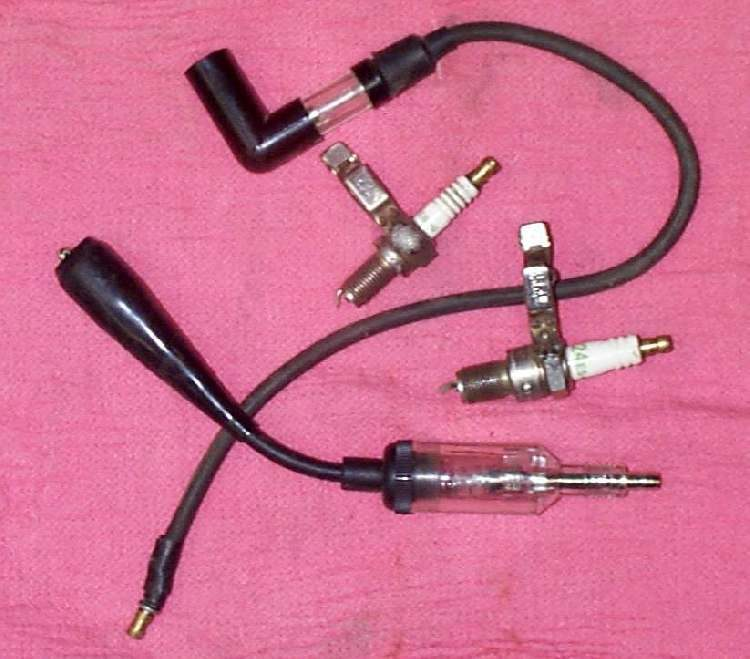

The engine starts and runs well when cold, but once it is fully hot it stalls at idle, or cuts out while riding. Heat changes many things: idle speed drops, electrical parts that are failing stop working, fuel can boil in a line near a hot engine, and tight valves stop sealing. How the engine stops tells you which.
Is it safe to ride?
With care, and only if the engine is not overheating. If the engine slowed, tightened, knocked or squealed before it stopped, stop riding and let it cool: it may be close to seizing.
Quick checks first
- Engine oil level correct (low oil makes engines run hot)?
- Cooling fins clean (air-cooled), or coolant level and fan working (liquid-cooled)?
- Does it stop suddenly, as if switched off, or slow down and die?
- Will it restart at once, or only after it cools?
- Is any fuel hose touching the engine or exhaust?
Diagnose it step by step
1Did the engine lose power, knock, squeal or tighten before stopping, or is it stiff to turn when hot?
- Yes: stop. Let it cool fully. See Air-cooled engine overheats, Liquid-cooled engine overheats or Engine has seized.
- No: go to step 2.
2Does it stop suddenly, like the key was turned off, and refuse to restart until it has cooled for 10 to 30 minutes?
- Yes: an ignition part is failing with heat, usually the coil or pick-up. Do a spark test while hot. Go to Ignition cuts out when hot.
- No, it restarts at once: go to step 3.
3Does it only stall at idle when hot, while running well on the move?
- Yes, carburettor: idle set while cold drops when hot. Warm the engine fully and adjust the idle.
- Yes, fuel-injected: read fault codes, then check the engine temperature sensor and clean the throttle body.
- No, it cuts out while riding: go to step 4.
4Carburettor bikes: is a fuel hose or the carburettor close to the hot engine or exhaust, or is the weather very hot?
- Yes: fuel may be boiling in the line (vapour lock). Reroute the hose away from heat and refit any heat shield. Then check the float level.
- No: go to step 5.
5Does it also pink (rattle) under load, or pop on the overrun?
- Yes: it is running lean, which makes heat. Go to Engine runs hot and lean and find an intake air leak.
- No: go to step 6.
6Still stalling hot?
- Check valve clearance on a cold engine. Valves set too tight can hold open when hot. Then follow Hard to start when hot.
Causes, most likely first
| Cause | How to confirm | Fix |
|---|---|---|
| Idle too low when hot | Stalls only at idle, restarts at once | Adjust idle or throttle body |
| Coil or pick-up failing hot | Sudden cut, no spark when hot, works when cool | Test the coil |
| Lean mixture or air leak | Pinking, popping, white plug | Intake leak |
| Fuel boiling in the line (carburettor) | Hose near heat; worse on hot days | Reroute hose; float check |
| Temperature sensor fault (injection) | Code, or wrong temperature in live data | Sensor check |
| Tight valves | Feeler gauge on a cold engine | Valve clearance |
| Overheating | Fins blocked, low oil or coolant | Air cooling check |